Haunted Mansion BK · every version16 built · 1 shipped
Every front page built for the house, in the order it was built. They are all still standing and every one of them still works — the numbers are the sequence, not a ranking.
These are live pages, not mockups. Every form on them writes a real row into the production waitlist table, so every submit button on every one of them is the real one.
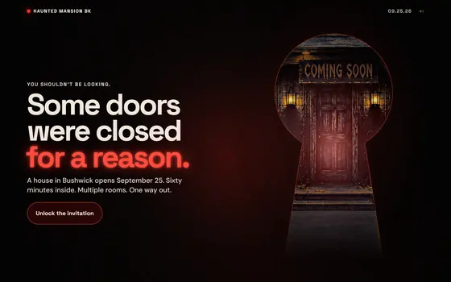
14Live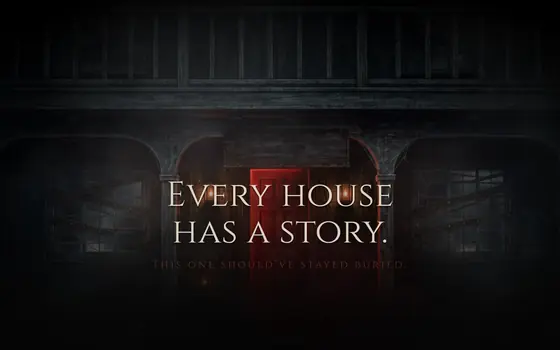
01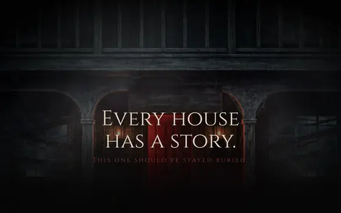
02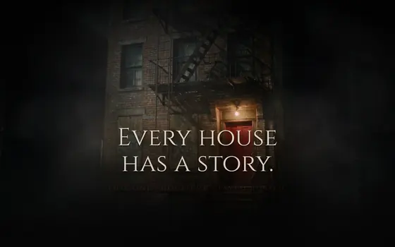
03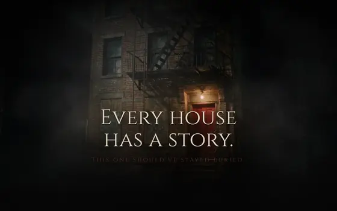
04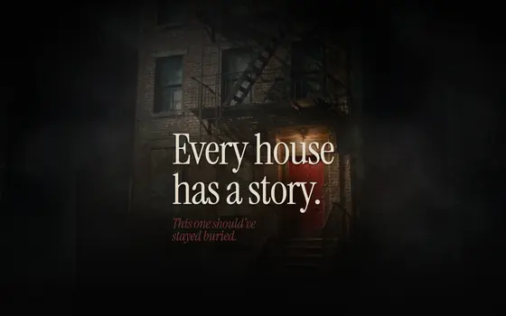
06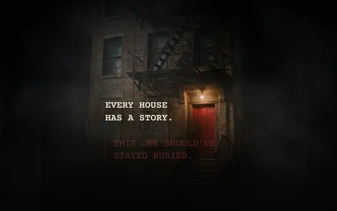
07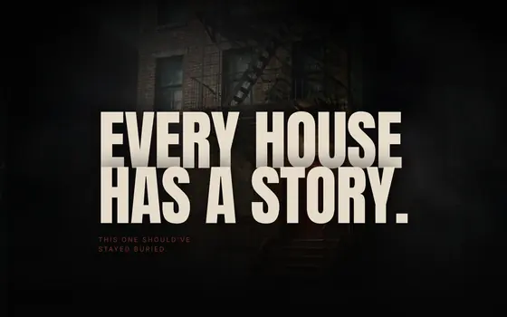
08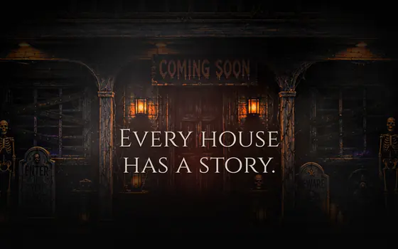
09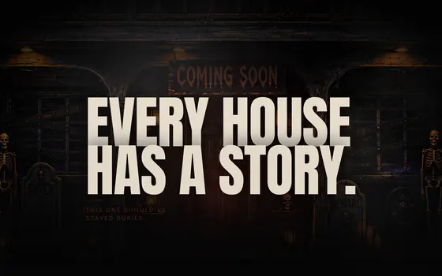
10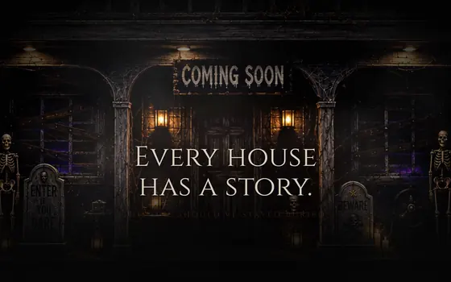
11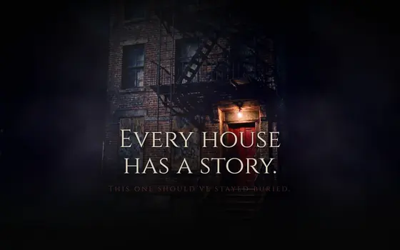
12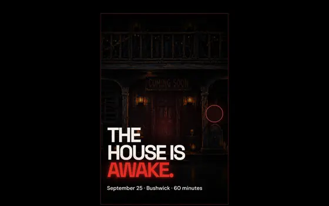
15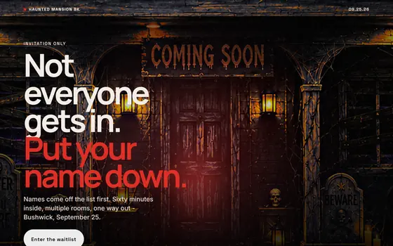
16Fourteen is what the live page is built from. The rest stay up because a version you can still open is worth more than a screenshot of one, and because the case for 14 only makes sense next to what it beat.